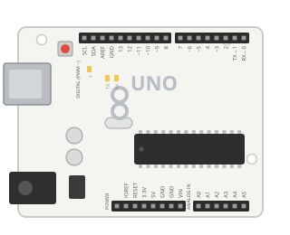
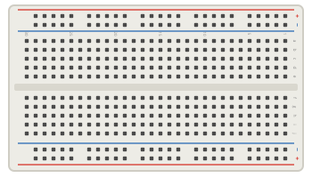
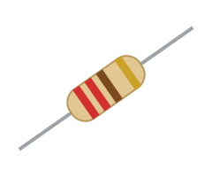
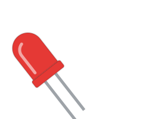
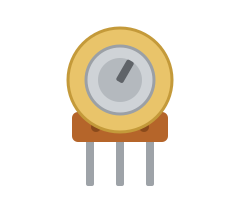
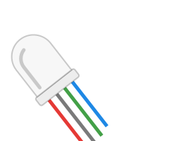

Componentes
[ Conheça os componentes ]
O que é, como funciona, tipos, montagem e um código exemplo de cada peça usada na oficina.

Arduino Uno R3
O Arduino Uno R3 é uma placa de prototipagem de código aberto baseada no microcontrolador ATmega328P.
Ver componente →
Protoboard
A protoboard (ou breadboard) é uma placa cheia de furos com contatos metálicos por dentro, usada para montar circuitos temporários sem solda.
Ver componente →
Resistor
O resistor limita a corrente elétrica em um circuito.
Ver componente →
LED
LED é a sigla de Light Emitting Diode, ou Diodo Emissor de Luz: um componente que transforma energia elétrica em luz.
Ver componente →
Potenciômetro
O potenciômetro é um resistor variável.
Ver componente →
LED RGB
O LED RGB reúne três LEDs em uma só cápsula: vermelho (R, red), verde (G, green) e azul (B, blue).
Ver componente →